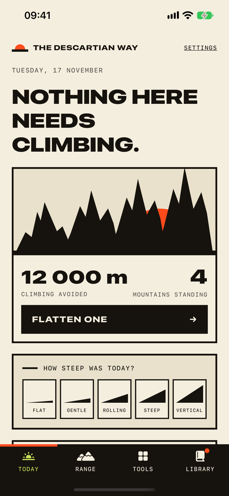
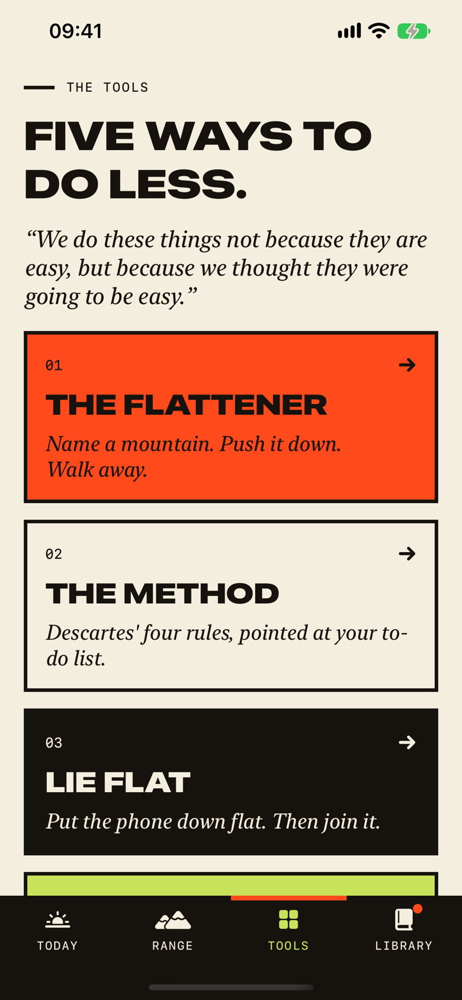
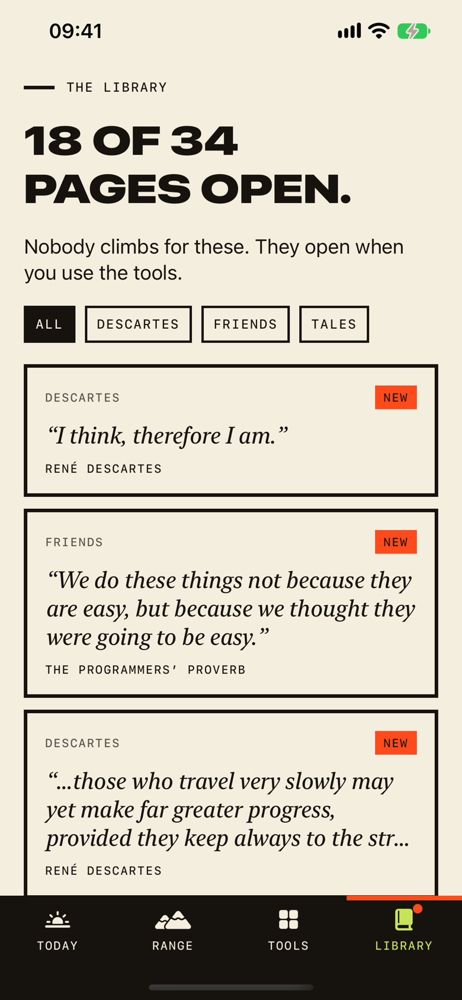

01
The Flattener
Name a mountain. Push it down. Walk away.
Type in the thing you've been dreading, then drag it flat with your thumb. The sun comes up behind it. This is the whole feature and it is extremely satisfying.
An iPhone app for doing less
They say mountains are there to be climbed. Mountains are there. That's all.
The tools
01
Name a mountain. Push it down. Walk away.
Type in the thing you've been dreading, then drag it flat with your thumb. The sun comes up behind it. This is the whole feature and it is extremely satisfying.
02
Descartes' four rules, pointed at your to-do list.
Doubt it. Divide it. Start with the easiest. Review. If nothing happens when you never climb it, it isn't a mountain. It's a rumour.
03
Put the phone down flat. Then join it.
A timer that only runs while your phone is lying down. Pick it up and it pauses, because that was uphill.
04
What you thought it would take, and what it took.
Log the “quick fix” that ate your afternoon. After a few, the app tells you your personal multiplier. It is not one.
05
Your days as an elevation profile. Aim for a line.
One question a day: how steep was it? No streaks. A streak is a mountain with a calendar.
In the hand



The programmers' proverb
“We do these things not because they are easy, but because we thought they were going to be easy.”
That sentence is on the first page of the library. There are thirty-four pages: Descartes, Pascal, Seneca, Montaigne and a few more, each with a flat reading. Nobody climbs for them. They open as you use the tools.
“…those who travel very slowly may yet make far greater progress, provided they keep always to the straight road, than those who, while they run, forsake it.”
Flat readingSlowly. Straight. Road. The man is describing a flat walk.
“All the unhappiness of men arises from one single fact, that they cannot stay quietly in their own chamber.”
Flat readingThree and a half centuries later it is still the hardest tool in this app.
“I like work: it fascinates me. I can sit and look at it for hours.”
Flat readingFinally, an accurate estimate.
Accountability, but horizontal
Free advice is easy to ignore, which is how you ended up with all these mountains. So the app is a small subscription, billed by Apple, with three days free to change your mind.
The first mountain gets flattened before anyone mentions money. Cancel whenever you like. Making that hard would be against everything.
The Descartian Way is on its way to the App Store, at walking pace. Until then, nothing is required of you. That part you can start today.
Coming to iPhone